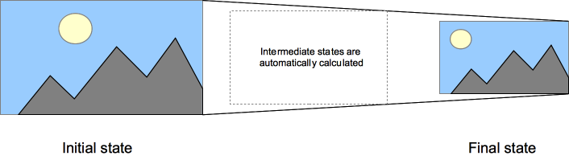

Transition은 무엇인가?
CSS의 여러가지 속성들의 전환을 부드럽게 해주는 기능입니다.
딜레이를 설정하여 어떤 속성을 움직이게 할지, 지속시간을 설정하여 트랜지션을 얼마나 지속할지, 타이밍 함수를 설정하여 어떻게 트랜지션을 설정할지 결정 할 수 있습니다.
transition-property
트랜지션을 적용할 속성들을 나열해서 명시합니다.
transition-duration
트랜지션의 지속시간을 명시합니다. 시간이 길어질수록 느려집니다.
transition-timing-function
- transition-timing-function: ease (자연스러운 움직임)
- transition-timing-function: linear (일정한 움직임)
- transition-timing-function: step-end (처음에서 끝으로 바로 이동)
- transition-timing-function: steps(4, end) (처음에서 끝으로 네번에 걸쳐서 이동)
transition-delay
바뀌는 시간 사이의 딜레이 시간을 명시합니다.
간단한 예제
1 | #delay {
2 | position: relative;
3 | transition-property: font-size;
4 | transition-duration: 4s;
5 | transition-delay: 2s;
6 | font-size: 15px;
7 | }
8 |
9 | #delay:hover {
10 | transition-property: font-size;
11 | transition-duration: 4s;
12 | transition-delay: 2s;
13 | font-size; 37px;
위 코드는 마우스를 해당 요소에 올려놨을때 2초의 딜레이와 4초지속의 폰트 크기 트랜지션을 예제로 표현한 코드 입니다.
이와 같이 가상클래스와 다양한 속성들을 이용해 여러 트랜지션 효과를 부여 할 수 있습니다. 자바스크립트를 이용하여 더 자연스러운 변화를 줄 수도 있습니다.